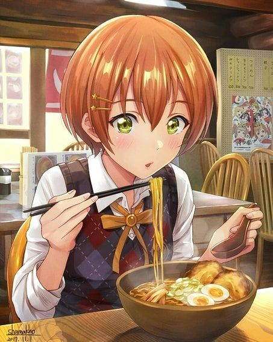
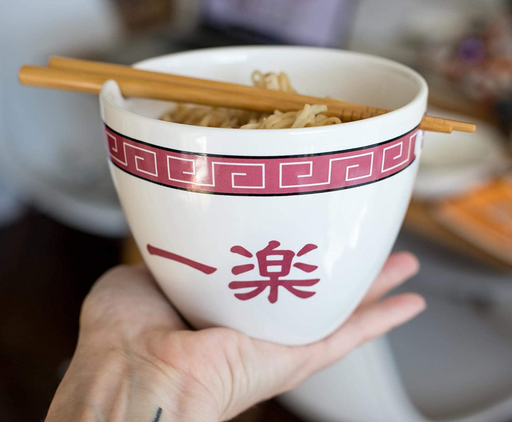
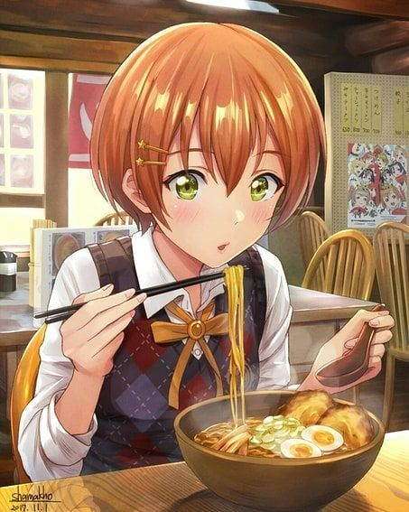
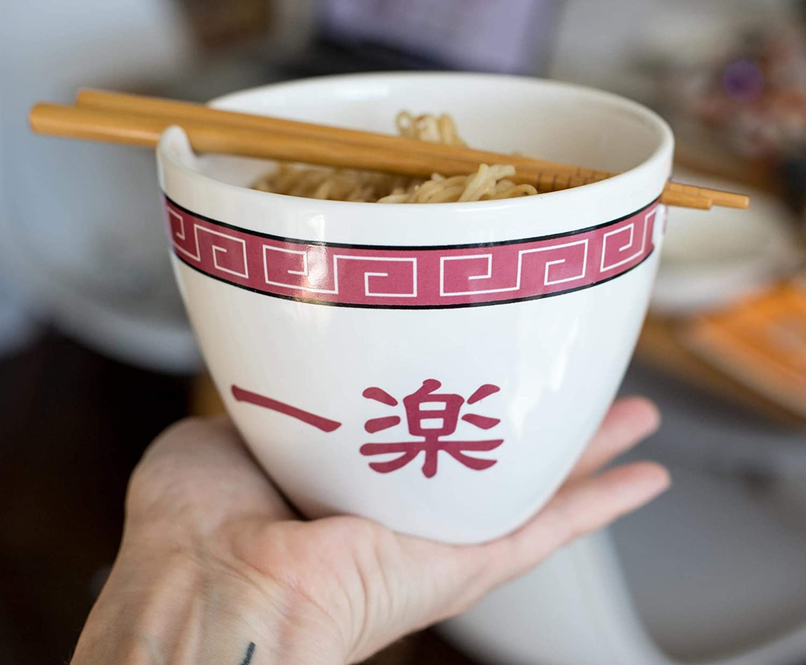
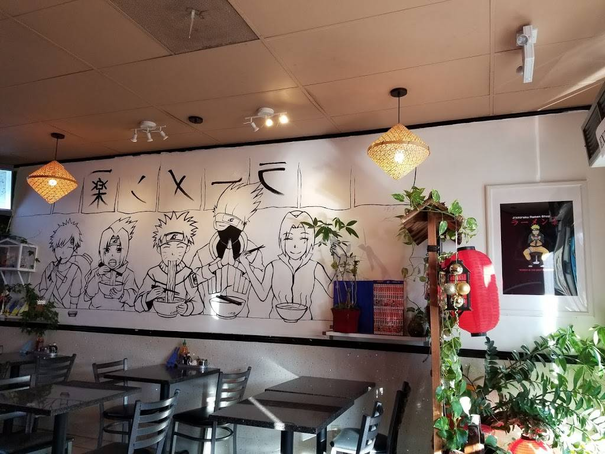

AboutUs
Our Vision:
Customer satisfaction becomes Our restaurant strives to become our customers favorite place to eat and drink.We provide support for our employees and encourage them to make their own decisions.
Our Mission:
Our mission is to be the most sustainable restaurant about japnese cusines ,to give our customers a place to celebrate life's special moments by offering the best food, service, and ambiance
 




Carry Original Taste
Ichiraku Ramen
Ichiraku Ramen is Naruto Uzumaki's favorite restaurant. He eats there regularly usually stopping by between missions and he is often joined by Iruka Umino, another frequent customer or else by his comrades like Hinata, Sakura and even Sasuke Uchiwa or their sensei.
Based on this conecpt we are here with this theme based ramen place you can order which ever food in our menu you want we are here for your satisfaction...... Thank You.
Contact Email : ichirakuraman003@gmail.com